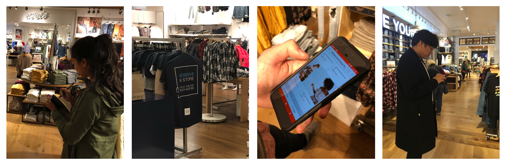
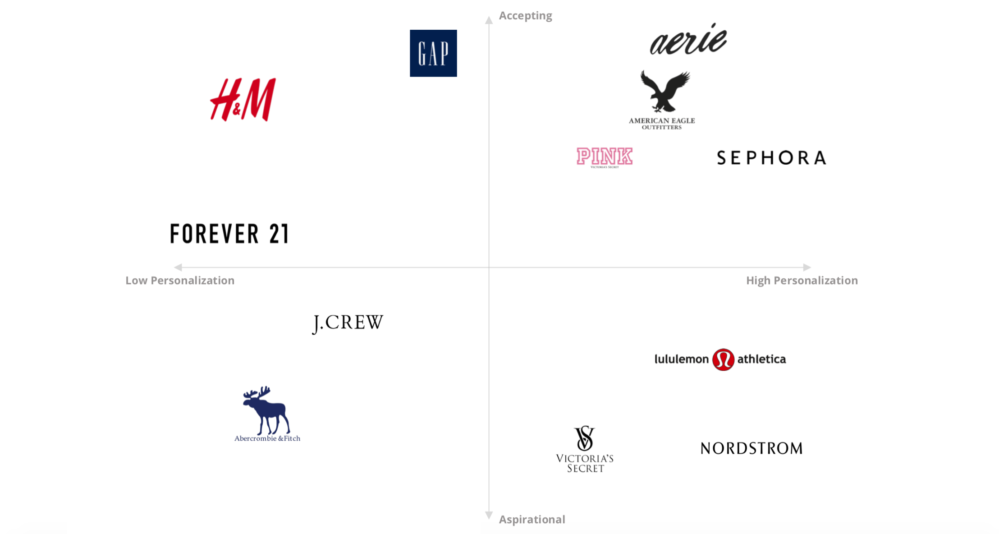
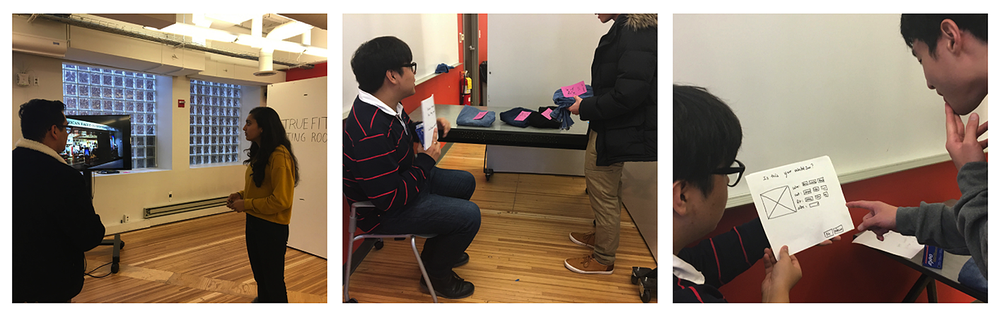

AEO True Fit Studio
Service innovation for American Eagle Outfitters
Our client American Eagle Outfitters used to be known to as a
popular teen fashion brand. In recent years it has been striving
to transform its brand image in order to appeal to a more diverse
customer base with innovative technology.
We designed a service innovation
AEO TrueFit Studio to increase traffic to physical stores
by offering customers an all-inclusive in-store shopping
experience. This new service allows customers of all sizes to have
find their perfect fit of jeans in-store through a comfortable and
private fitting space.

- Skills
- User Experience Design
- Contextual Inquiry
- Storyboarding / Journey Map
- Service Blueprint
- Tools/Languages
- Figma
- InVision
- Adobe AfterEffects
Phase 1: Discover
American Eagle Outfitters is a popular clothing brand favored by college-aged young adults. However, it suffers from perceptions as a “middle school” clothing retailer in the eyes of 20-25 year olds. The company is currently seeking to attract a more diverse customer base and promote customer loyality. To gain deeper insights into the problem context and thus better serve our client, we took the following steps in our research structure:
1. Initial information from our talk with the brand representatives to understand their needs and wants for this innovation.
2. Broad secondary research into four areas (in-store personalization, omni-channel fulfillment, return and exchanges, associate enactment) to determine which innovative direction we want to dive in futher on.
3. Understand customer's current state from primacy research, including survey with targeted customers and in-store contextual inquiry.
4. Conduct additional secondary research to gain an overview of current practices of AEO's competitors on the market.
Contextual Inquiry: Deep Dive into Customer Journey

When we visited the American Eagle store, we decided to focus our
observations on the various touchpoints in interactions between
the in-store associates and shopper. We saw that features on the
the AEO application add little value to the in-store shopping
experience: many customers aren't even aware of the app. There is
also a mismatch between the role in-store associates and the
expectations set by customers. Many customers find associates to
be intimidating and are unwilling to seek help when they encounter
sizing issues.
Competitive Analysis: Evaluate AEO's current stance in
market

We conducted competitive analysis on the servicescape of apparel
retailers such as Sephora, Abercrombie & Fitch, and Lululemon. We
found the common pitfalls for retailers is their inability to
personalize shopping experience for all customers. Some customers
feel marginizalied in the received service due to sizing issues,
lack of privacy, and unpleasant associate interaction in store.
Future innovations should focus on enhancing American Eagle’s
accepting and associate engagement driven shopping experience
while rehabilitating their image to increase traffic among 20-25
year olds.
Phase 2: Synthesize and Pivot
Based on our research findings, we create artifacts to model the
current service experience. This includes personas, current
customer journey maps, service blueprint which describes the
current state visible and backstage interaction. By evaluating the
current service state, we hope to find opportunities for
innovation to bring new value to the service.
We first developed three key customer types that American Eagle
could pivot to improve their in-store experience:
-
The Social Shopper:
Social media heavily influences their buying habits as they are avid users on platforms like instagram and facebook. They struggle to purchase clothing from other brands due to inconsistency of sizing across brands. -
The Exploratory Shopper:
A shopper who likes to browse but feels intimidated to shop because they don’t know what they want or what fits them. -
The Focused Shopper:
A shopper who knows exactly what they want and what brand to purchase from. They want their shopping experience to be time-efficient and independent.
3. Ideation and Iteration
Storyboarding
We learned through our research that American Eagle carries many
“online-only” sizes, which means that customers in need of these
sizes are unable to try these jeans on before purchasing them.
Consequently, they are left ordering several sizes of jeans,
hoping one fits, and returning the other jeans. Moreover,
customers are reluctant to share their sizing information with
associates. We decided that this is a critical problem space that
our service innovation should tackle.

Service Enactment
we ran a service enactment with 8 participants in our target
demographic of 20 to 25 year olds. Each participant was given a
series of user tasks to complete as they experienced the TrueFit
Studio like at an actual AEO store. Our research goals for the
service enactments were to:
1. understand if users understand how to use our service
2. learn whether they get a sense of inclusivity and brand loyalty
from using our service
3. observe how they interact with the mounted display when
checking out the items.

4. Final Design
We envision TrueFit Studio to be a service in which users would walk into a fitting room that has all possible sizes of several styles jeans stacked for try-on. There would be minimal to no associate interaction involved in this process. Once the user finds a pair of jeans they like, they can proceed to checkout within the studio itself. They can use the mounted display to log into AEO Connected, choose what color jeans they want, and have the jeans delivered home.
5. Takeaways
The most challenging part of the process is finding the 'point of
entry' of innovation - what service can we bring to create new
value, while minimizing potential risks of change? This requires a
careful deconstruction of the existing system and thorough
competitive analysis. The process of design also requires
evaluation through different channels. It's difficult to get a
service right, and it often takes many rounds of iterations and
refinement.
This project allows me to see design with me a pair of fresh eyes,
because we are designing with methodologies specifically targeted
at a service. It's very different from what I've done in the past
with UX design and visual design. Design for service is more
multifactorial: while user experience is at heart of our priority,
we also need to consider risk management, competitive advantages,
scope of implementation, the integrability into the current
system, etc.